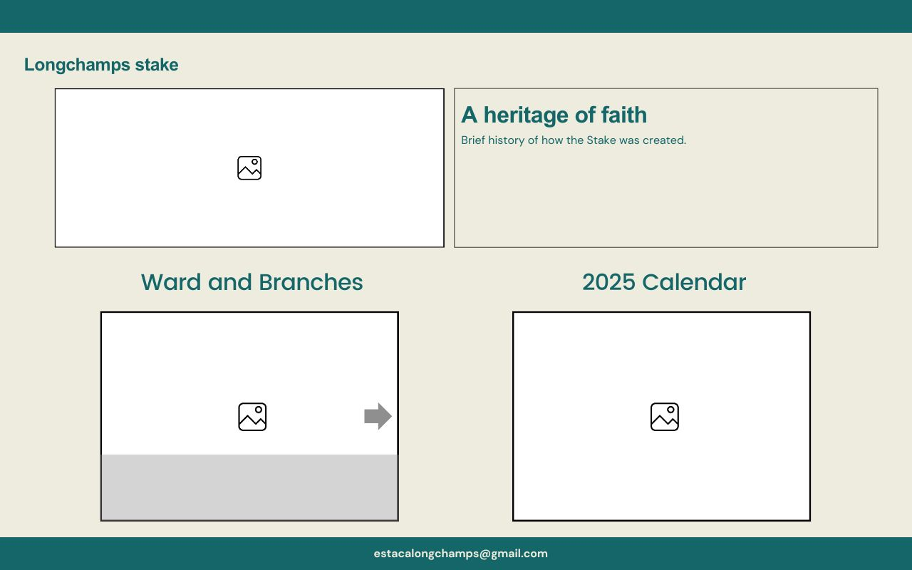

Site Plan: Longchamps Stake
Site Name
Name: LongchampsStake.com
This name was selected because it represents the stake of The Church of Jesus Christ of Latter-day Saints that covers the Longchamps area and all its wards.
Site Purpose
The website will provide information about the stake’s history, details about wards and their meetings, and an activity calendar. It will serve as a communication tool for members and leaders.
Scenarios
Examples of questions a visitor might ask:
- Where can I find the Sunday meeting schedule for Glew Ward?
- What is the activity calendar for the upcoming month?
- Who are the current leaders of Numancia Ward?
Color Scheme
- Primary Color: #156669 (Used for headers, footer background, and navigation menu)
- Secondary Color: #eeecde (Used for page background and content areas)
Typography
- Main Font: Arial (used for general content and headings)
- Alternative Font: Sans-serif (used for subtitles or quotes)
Wireframe
Mobile View
Desktop View
